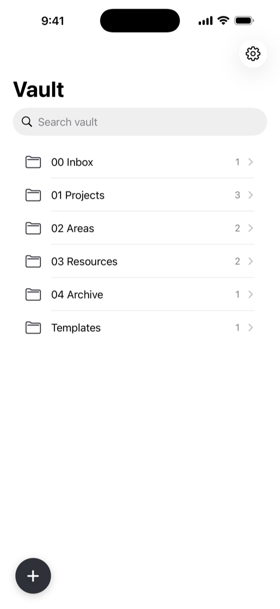
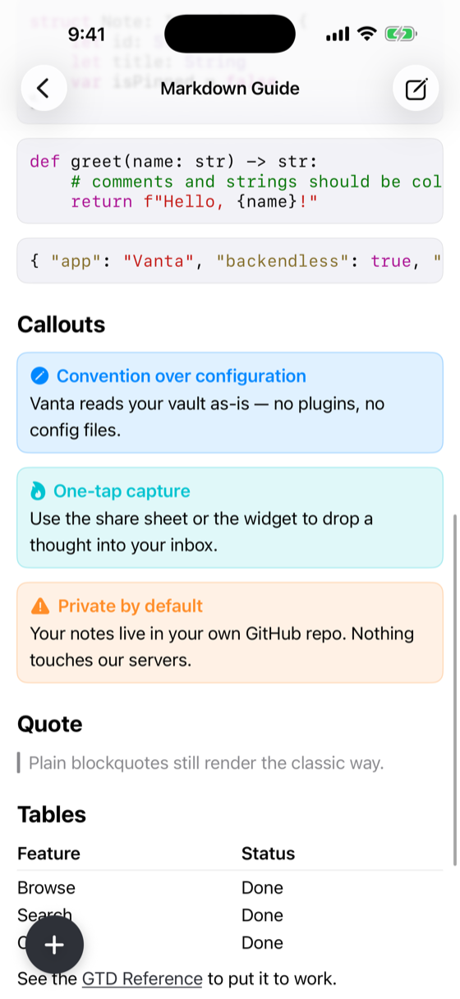
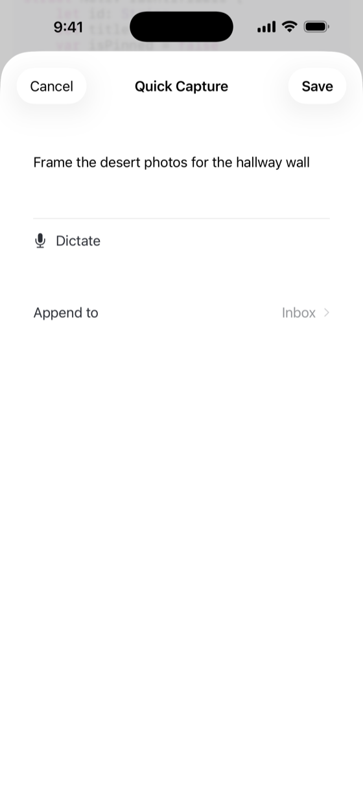

Your Obsidian vault on iPhone, backed by your own private GitHub repo. No servers in between.



Browse and edit your Obsidian notes straight from your private GitHub repo. Wikilinks, backlinks, folders.
One‑tap and dictation capture to your inbox — with on‑device cleanup that fixes mis‑heard vault terms.
Syntax‑highlighted code, callouts, tags, tables, images, and SVG — rendered the way you wrote them.
Next Actions, Waiting For, a weekly review, a logbook, and favorites — convention over configuration.
Format, summarize, suggest tags, and find next actions — private, free, and offline. No account, nothing sent.
Your notes move directly between your device and GitHub. We run no analytics and store nothing.
Vanta is built on your infrastructure: a private GitHub repo you already own, in plain Markdown you can read anywhere. Favorites even sync with Obsidian’s native bookmarks.